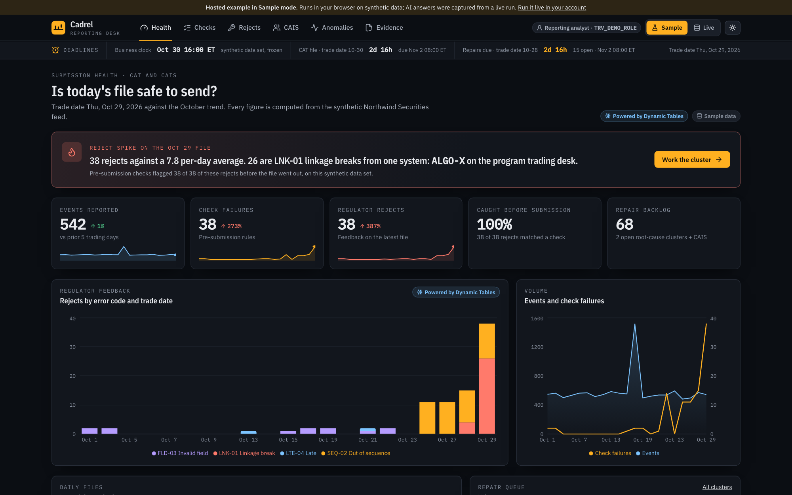
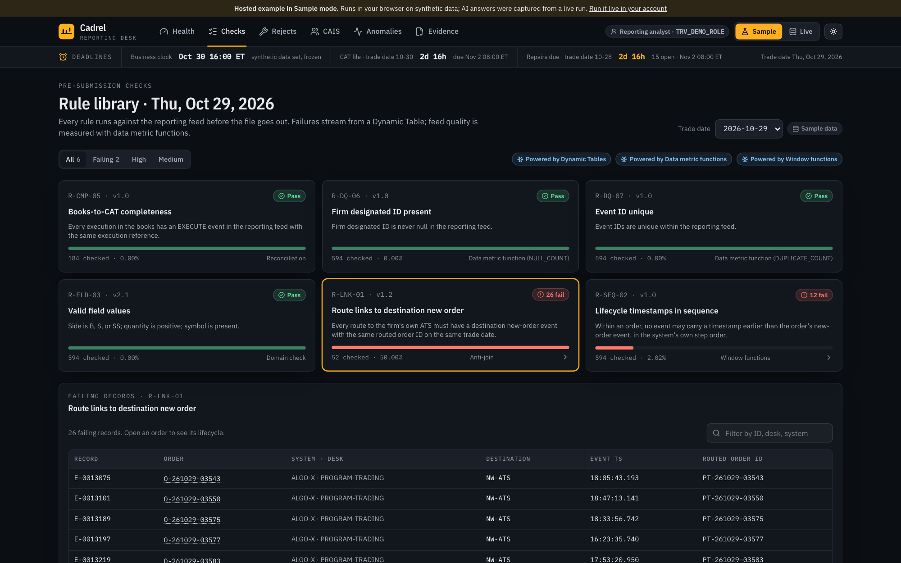
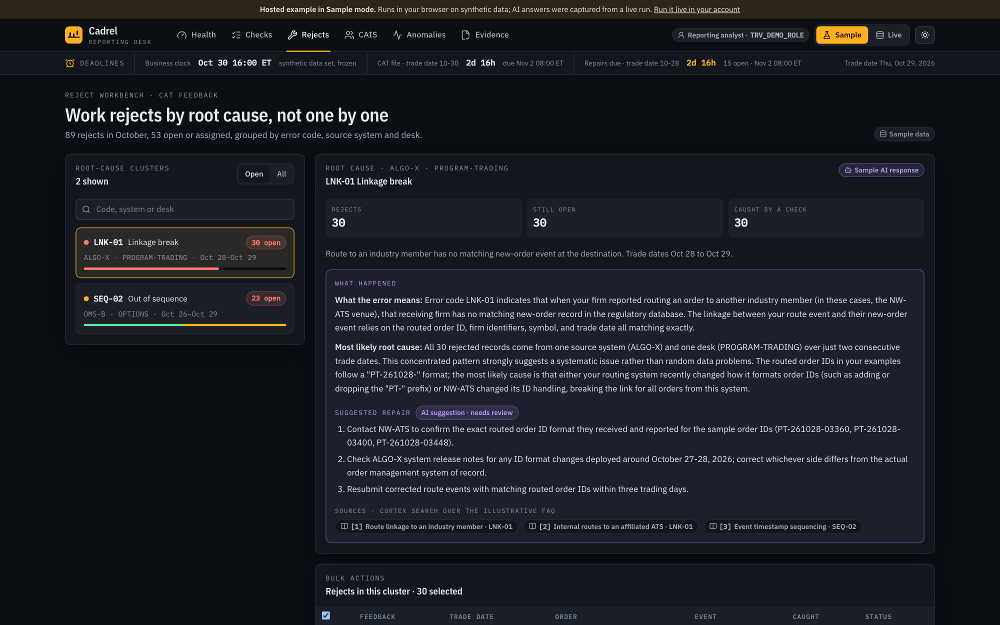
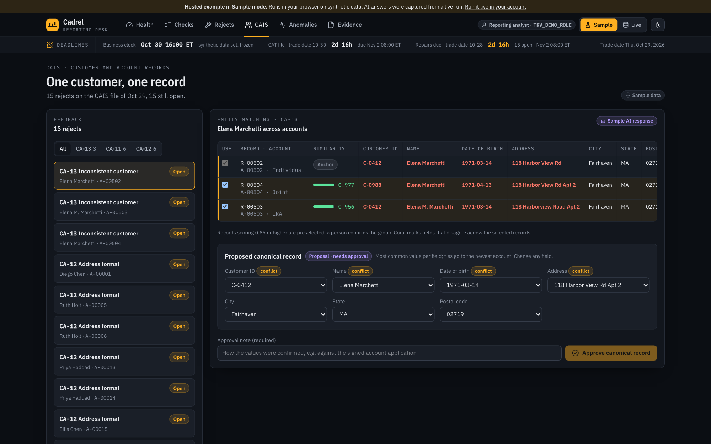
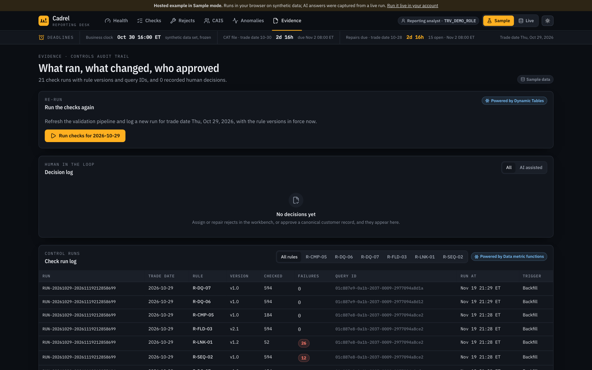

Catch CAT and CAIS reporting errors before the regulator does
Broker-dealers report every order event to the Consolidated Audit Trail (CAT) and customer and account data to CAIS. Volumes are huge, checks and reconciliations are often manual, and regulator feedback arrives as rejects that analysts work by hand against a deadline. This example runs pre-submission checks and a books-to-CAT reconciliation in a Snowflake pipeline, flags volume and error anomalies, clusters rejects by root cause with an AI explanation and suggested repair, matches customer records across accounts, and logs every run and decision as evidence.
| Events reported | 542 |
| Regulator rejects | 38 · +387% |
| LNK-01 linkage breaks, ALGO-X | 26 |
| Caught before submission | 38 / 38 |
| SEQ-02 out-of-sequence events | 12 |
| CAIS customer on 3 accounts | match 0.977 |
| Next CAT file due | 2d 16h_ |
Synthetic data, illustrative logic. Northwind Securities and every person in it are fictional. Schemas and error codes are simplified; they are not the official CAT or CAIS specifications. This is not regulatory advice, and AI suggestions need a person's approval.
Who it's for
Reporting analysts
A reject queue grouped by root cause, the order lifecycle behind each reject, a plain-English explanation, and bulk repair actions.
Reporting managers
Today against the trend, the share of rejects the checks would have caught, the repair backlog, and the next deadline.
Compliance and audit
A run log with rule versions, counts, and query IDs, and a record of every repair and approval with the person who made it.
Walkthrough
Screenshots of the running app on its synthetic data set: trade dates October 1 to 29, 2026, frozen at a business clock of October 30, 16:00 ET.



PT-… and the ATS recorded the ID without the prefix, so the route can't be linked.



How it works
Each capability below ran in live mode on a Snowflake Enterprise account in November 2026.
| Step | Snowflake capability | What it does here |
|---|---|---|
| Validation pipeline | Dynamic Tables | CHECK_FAILURES (route linkage, timestamp sequence, field values, completeness), BOOKS_RECON, and DAILY_STATS, refreshed from the raw feed. |
| Sequence checks | Window functions | Each order's events in the system's own step order, compared with its NEW event. (MATCH_RECOGNIZE isn't supported in Dynamic Tables.) |
| Completeness and validity | Data metric functions | NULL_COUNT and DUPLICATE_COUNT, scheduled on the feed and recorded per trade date in the run log. |
| Anomalies | Anomaly detection | One model, one series per system and metric, trained on four months of daily counts. |
| Reject explanations | Cortex Search and AI_COMPLETE | Retrieves FAQ excerpts for the error code, then drafts an explanation and a suggested repair from the cluster's facts. |
| Customer matching | AI_SIMILARITY | Scores records that share the tax ID's last four digits; a person approves the canonical record. |
| Evidence | Stored procedure and query history | RUN_CHECKS logs each rule's version, counts, and query ID; every human decision is written to an approval log. |
Get started
No account
Open the hosted example, or run it locally with Node.js 20.19 or later:
git clone https://github.com/sfc-gh-ooral/sfguide-trade-reporting-validation.git
cd sfguide-trade-reporting-validation
npm install
npm run devAI answers in this mode were recorded from a live run and are labeled Sample AI response.
Your Snowflake account
- Run
sql/setup.sqlin a Snowsight worksheet. It creates a dedicated database, an XSMALL warehouse, and a least-privilege role, loads the synthetic data from the repository, builds the pipeline, and trains the anomaly model. - Register a key pair for your user and copy
.env.exampleto.env.local. - Run
npm run devand switch to Live. Each screen shows the live role and measured latency. - When you're done, run
sql/cleanup.sql.
Requires Enterprise Edition or higher. The README lists every object created, the expected cost, and the full steps.
Customize with Cortex Code
- "Map my OMS event tables to SRC.ORDER_EVENTS and list the fields I can't map."
- "Add a rule to the library for late reporting by event type, with tests."
- "Tune the anomaly model for my daily volumes and explain the false-positive trade-off."
Limits and disclaimer
- Schemas, rules, error codes, deadlines, and regulator feedback are simplified and illustrative, not the official specifications. The feedback is generated with the data.
- Results such as "38 rejects" and "100% caught" are planted stories on this synthetic data set.
- Repairs are recorded in the app; nothing is resubmitted anywhere.
- AI answers vary run to run and are suggestions; nothing is repaired or approved without a person.
- Latency depends on your account, region, model, and warehouse. The app shows measured times in live mode only.
This is an illustrative example provided as is. It is not an official Snowflake product, it isn't supported by Snowflake Support, and it contains no customer data. Not regulatory advice. Apache 2.0 license.